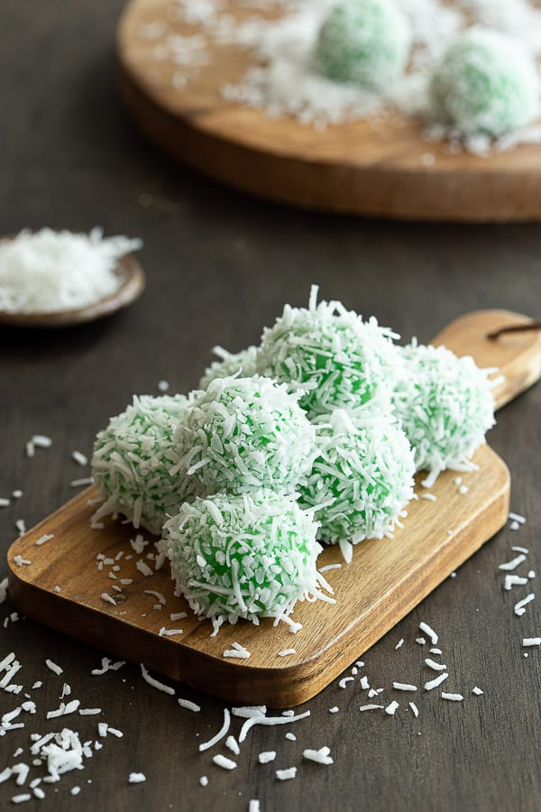

Klepon Recipe

Klepon is an Indonesian sweet treat made from glutinous rice flour combined with the amazing flavour combination of pandan, coconut and palm sugar. It’s a popular street food snack, often found at morning and afternoon markets around Indonesia. They’re also known as onde onde in Malaysia and Singapore.
Ingredients
- Palm Sugar
- Pandan flavouring
- Glutinous rice flour
- shredded coconut
- Coconut milk
- Salt
Steps to make klepon:
- Steam shredded coconut to get it soft and fluffy (around 5-10 minutes)
- In a small saucepan, add the cup of coconut milk, teaspoon of pandan flavouring and pinch of salt.
Warm on low heat for a few minutes and remove
- In a medium bowl, add one and half cups of glutinous rice flour and warmed pandan coconut milk.
Stir with a spoon until combined, then knead until it turns a soft dough.
It should be flexible and pliable at this stage.
- Begin to shape klepon balls by taking heaped teaspoon of the dough and rolling it around into a ball (around 3 cm/1 inch in diameter).
Work quickly here so the dough doesn't dry out.
- Now it’s time to stuff them with the palm sugar! Take a ball and push an indent into the centre, making a hole.
Pop in a piece of chopped palm sugar and close the dough over the hole.
Make sure it’s sealed by pinching the dough back together, then roll it back into a ball with your palms.
Repeat until all the klepon are ready to cook!
- Bring a large pot of water to the boil. Once boiling, place the klepon into the pot. Avoid overcrowding, and do them in batches if necessary.
The dough is cooked when they float to the top. This usually takes around 5-10 minutes, you can cook them a little longer to ensure the palm sugar melts and heats up on the inside.
Remove from the water with a slotted spoon once cooked.
- Next, grab the bowl of steamed coconut and roll around the klepon to coat them.
Use a fork or spoon if you want to avoid the coconut and klepon sticking to your fingers.
Serve warm or at room temperature. Make sure not to burn your mouth on the hot palm sugar inside!
Recipe Source
Back to Home Page